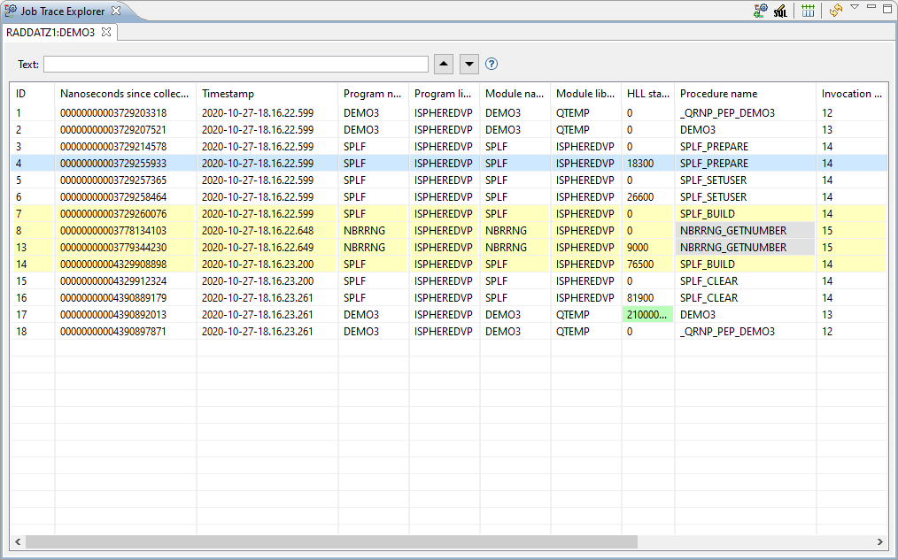
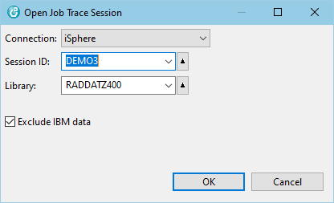
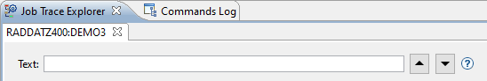
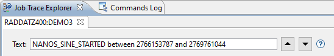
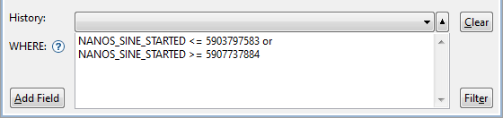
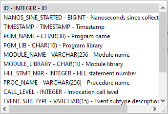

(Local operation that does not contact the host system.)

(Remote operation that reloads the data from the host.)
The data is stored in several files (QAYPE*) at the end of the trace session. These files are joined by the iSphere Job Trace Explorer when loading the job trace entries into the view.
IBM related entries are excluded to reduce the number of items.
A job trace is started with command STRTRC as shown here:
Please notice, that the default value of parameter Maximum storage to use (MAXSTG) is often to small for storing the complete session data. For example it requires 200000 k for capturing the job trace entries of the iSphere demo program DEMO3.
An active job trace session is terminated with command ENDTRC:
The data is stored in several files, all starting with QAYPE*.
You can open the Job Trace Explorer perspective from 'Window -> Open Perspective -> Other...'. The perspective looks like that:

The following colors are used:
| Green | Higlighted values. | |
| Yellow | Highlighted procedures. | |
| Grey | Hidden/excluded procedures. |
The following actions are available:
| Open a dialog for selecting the trace session. | ||
| Opens an SQL editor for editing the SQL WHERE clause for filtering the job trace entries. (Local operation that does not contact the host system.) | ||
| Resets all columns to their default size. | |
| Reloads the job log entries. (Remote operation that reloads the data from the host.) |
Options of the table context menu:
| Highlight value. Right-click a table cell and select this option to highlight the selected value wherever it is in the table. Select this option again to disable highlighting the value. | ||
| Highlight procedure. Right-click a procedure ENTRY (called by) or EXIT (returned to) row to highlight the selected procedure. Select this option again to disable highliting the procedure. | ||
| Jump to procedure exit. Right-click a procedure ENTRY (called by) row to jump to the end of the procedure. | ||
| Jump to procedure entry. Right-click a procedure EXIT (returned to) row to jump to the beginning of the procedure. | ||
| Hide procedure. Right-click a procedure row to hide it from the view. | ||
| Show procedure. Right-click a procedure row to show it again. |
The available options of the view menu are:
| Open | Loads a job trace session from a Json file that was created with the Save option. | |
| Save | Saves a job trace session to a Json file on the PC. |
Click the Open Job Trace Session button at the top of the Job Trace Explorer view:
Select the connection and fill in the session ID and library name and click the [OK] button.

Use the Exclude IBM data checkbox to specify whether or not to exclude IBM related trace entries. It is highly recommended to exclude IBM related entries due to the large amount of extra data, depending on the kind of the program that has been traced.
The default value of this checkbox is always true.
Use the text search controls at the top of the Job Trace Explorer view to search for job trace entries:

Enter a search argument and press one of the buttons next to the text field to start your search (up or down the list). You can search for simple strings or generic strings using the wildcard characters * and ?.
| * | Replaces a group of characters. | |
| ? | Replaces a single character. |
The following columns are searched:
For more advanced searches you can enter SQL statement as shown below:

Use Ctrl+Space for content assist. See also Filtering Job Log Messages.
You can use the SQL editor to filter job trace entries. Click the Edit SQL button at the top of the Job Trace Explorer view to open the SQL editor:
The SQL Editor is used to enter a SQL WHERE condition for selecting a subset of the available job trace entries entries. Enter the WHERE condition and then click the Execute button or press Ctrl+Enter to execute the query. Refer to the SQL Reference to see the list of available functions.

Use Ctrl+SPACE for content assistance.

The following actions are available:
| Ctrl+SPACE | - | Content assist. |
| Add Field | - | Content assist. |
| Clear | - | Clears the where condition. |
| Ctrl+ENTER | - | See: Filter |
| Filter | - | Executes the query with the current where condition to create a subsetted list of the available job trace entries. |
| Notice: Filtering job trace entries is a local task, which does not reload the entries from the host. |
| Notice: The SQL WHERE clause is applied to the records that have been downloaded to the PC. It must be specified in the iSphere SQL syntax, which in most cases matches the IBM i SQL syntax. |
The iSphere Job Trace Explorer uses the following SQL WHERE clause to exclude entries related to IBM:
The used correlation IDs are:
| x | - | QAYPETIDX | PEX TRACE INDEX DATA |
| t | - | QAYPETBRKT | PEX TRACE JOB STYLE BRACKETING EVENT |
| i | - | QAYPEPROCI | PEX PROC RESOLUTION DATA |
| v | - | QAYPEEVENT | PEX EVENT MAPPING DATA |
| ci | - | QAYPEPROCI | PEX PROC RESOLUTION DATA (caller procedure) |
The base SQL without the WHERE clause looks like that: